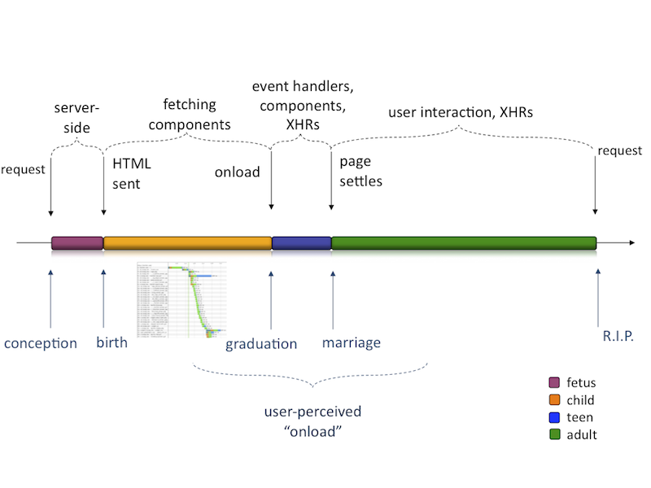
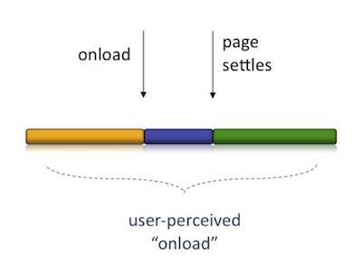

The business, psychology and technology of high-performance web apps
Book of Speed
Chapter2 ▼ The Life of Page 2.0
In its infancy, the Web was a document retrieval system, initially meant to serve static pages linked to each other. When you follow a link or type in the address bar of the browser, a new page is retrieved from the server and displayed. But in the world of Web 2.0 and post-Web 2.0 the user experience is often much different. With the addition of JavaScript, CSS and Ajax (XMLHttpRequest) pages are now much more like applications, rather than static documents.
This chapter draws a parallel between the human life and the life of the contemporary web page (or web application), which we'll call Page 2.0. After considering the stages of Page 2.0's life, the chapter outlines the opportunities for speed optimizations in each stage. Further chapters dig into the details of how exactly to implement these optimizations and create web apps built for speed.
The Lifetime
Let's take a look at the different stages of the life of Page 2.0 as illustrated in Figure 2.1. Plotted on the timeline you can see the key moments of the life of a page and how they correspond to the human life.

The Request
It all starts with the page request. Someone types in a URL or clicks a link. This is the moment of page's conception. We'll take a detailed look at what exactly are the requests and how they work in the next Chapter 3.
Generating HTML Document
Next follows the server's "pregnancy" with the page. In the beginning of the Web this phase simply consisted of server software looking for the requested static document (HTML file) on the hard drive and reading its contents. But things are more complicated now when most of the web sites use server-side programming language, such as PHP, Ruby, Python, Perl, to assemble the resulting document dynamically.
The server-side program (often called a server-side script) first fetches data from somewhere, usually from a database or from web service calls to other servers. Then it crunches that data stitching together a string of HTML code, which is the new dynamically generated document.
In this book we'll not worry about optimizing this part because, as we'll see, this is not where most of the time is usually spent.
The Response
Luckily if there are no complications, such as abortions or 404 Not Found pages, the pregnancy is over, and the HTML document is sent to the browser with the so-called HTTP response.
The Page 2.0 is officially born.
Waterfall
Then comes the waterfall phase when the browser downloads all the extra page components required by the page - images, scripts, styles... This phase ends with the onload event which the browsers fire after all components referred to in the HTML document are downloaded. This phase roughly corresponds to the childhood and teen years of our little human, which eventually graduates and becomes Ms. Page. The waterfall is the most important phase with regards to speed optimization. A major part of the book, starting with Chapter 3 is dedicated to optimizing this phase.
Settling Down
Right after onload comes a phase of settling down when the young Ms. Page is still search for her true self and identity. In technical terms this is the phase when JavaScript kicks in and starts performing some initialization work such as attaching event handlers to DOM elements, progressive enhancements, and maybe fetching a few more components or getting some additional data via Ajax calls.
The page then eventually settles down. The status bar stops showing URLs that are being downloaded, browser indicators stop spinning, the cursor is no longer showing busy icon and the user gets the full interaction experience. You might say that the young adult is back from backpacking across Western Europe and Tibet and ready to get married, find a stable job and even own a barbecue grill.
User Interactions
Then life goes on, user interacts with the page. Some pages are mostly static and quite uneventful, for example a news article or a blog post, where the most exciting thing that happens is the occasional ad rotation. Others (think a webmail inbox) are full of ups and downs (uploads/downloads), always getting more data, updating and self-improving, always on the move.
Next Request
Sooner or later along comes the next request to end it all. The user clicks away from the page, making a new request and our Page is laid to rest after the browser has fired the onunload event.
When Is a Page Done?
While onload is a concrete event which should signify when the page is ready, it's not always that simple. Just like in real life is not quite clear when someone has reached maturity, if ever. The "user onload" is an undefined point in time that could happen before the onload and way after (Figure 2.2). It all depends on the type of page or application and also on the user.

An article page could be considered ready when the article title and content are ready. The user can read and therefore interact with the page, while images and ads are still being downloaded. Other times the onload may happen relatively quickly, but the actual page content is still being retrieved and the page is far from usable, hardly anything more than a splash screen shown (probably with the word "Loading..." accompanied by a spinning wheel animation) while the actual content is still to come.
It also depends on the type of user, because some users will wait for the page to stop moving and shifting, and stand completely still. Others will scroll almost immediately, as soon as something shows up, which is a reflex in an answer to the fact that the top of the page often contains a banner ad or is simply the site's static header containing logo and navigation.
It's up to you to figure out when is the "user onload" for your type of page and your type of user. In the lack of a better definition of user onload, the page onload event or the DOMContentLoaded are often a good approximation for performance measurement purposes.
The Road Ahead
Now that we've identified the most important phases of a page's lifetime, let's explore, at a high level, what can we do speed up each of those phases.
Probably the first and most important place for optimization for most pages is the waterfall stage because that's where usually the time is spent. However, you can optimize the page in any of the other stages too. It's important to identify where the bottlenecks of a specific page are, then prioritize and focus on the areas where you'll see the greatest benefit.
Below is a summary of the main optimization activities in each stage. Don't worry if some of these sound like a foreign language, they are described in details throughout the rest of the book.
- Optimizations at request time, which include for example reducing the size of the requests by sending requests with fewer cookies or no cookies at all for static page components, such as images.
- Optimizing the waterfall which can be divided into the following categories:
- Fewer page components: it's obvious that your waterfall will be shorter when there are fewer items in it. In Chapter 3 you'll read about reducing the number of HTTP requests, merging components, using CSS sprites, using data URIs and MHTML, caching and implementing "never expires" policy to improve repeat visits, removing duplicates, near duplicates, and plain old 404 Page Not Found errors. In order to reduce the number of components you can also remove the ones that you don't need immediately and load them at the next stage of life - after onload (this is a technique known as lazy-loading)
- Smaller components: once you've removed or merged components, the ones that are left should be as small as they can be. This means using compression, minification, zero body 204 components (these techniques are described in Chapter 4) and optimizing images (Chapter 5)
- Move out of the way: some components in the waterfall harm more than others and not everything happens in parallel. Loading components in parallel is good because more components are downloaded at the same time and the waterfall finishes earlier. Chapter 6 discusses non-blocking JavaScripts and CSS, as well as reducing the number of DNS lookups redirects.
- If the waterfalls start early they will finish early. Chapter 9 describes flushing and HTTP chinked encoding to start the waterfall even before the page is born. (If you know it's going to be a baby girl, you can start hoarding the stuff in the pink color scheme)
- Optimizing the after-
onloadphase: you can help here too. For example, you can start some of the JavaScript initialization work after theDOMContentLoadedevent fires, you don't always need to wait foronload. - The interactive phase (the adult life phase) optimizations include tweaking CSS and JavaScript performance to make sure your user interactions are smoother, more pleasant, and the UI is responsive (Chapters 7 and 8)
- Towards the end-of-life you can help too. The old tired page can leave a good inheritance by preloading some of the components that the children and grandchildren pages may need and speeding them up in advance.
Let's Do It
This chapter described the main parts stages of life in the contemporary average Page 2.0 together with the roadmap for improving the page speed at each stage.
Now let's dive into the details.